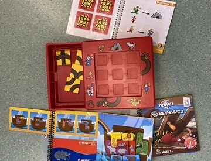

- Art des Spiels
- Physisch und Digital (zum Testen)
- Plattformen
- Tablet, Smartphone oder Cumputer (zum Testen der Spiele)
- Genre
- Logikspiele, Denkspiele, Puzzle
- Empfohlenes Alter
- Verschieden, abhängig vom spezifischen Spiel (ab 2 Jahren bis Erwachsene)
- Spieleranzahl
- Einzelspieler (bei den meisten Spielen)
- Spieldauer
- Variabel, typischerweise 5-30 Minuten pro Herausforderung
- Schwierigkeitsgrad
- Einfach bis Sehr Schwer (je nach Spiel und Level)
Kurzbeschreibung
Smart Games umfasst eine breite Palette von Logik- und Denkspielen, die darauf ausgelegt sind, das kognitive Denken und die Problemlösungsfähigkeiten bei Spielern jeden Alters zu fördern. Die Spiele reichen von handlichen Reisespielen bis hin zu grösseren Brettspielen und digitalen Anwendungen. Jedes Spiel ist so konzipiert, dass es eine spezifische Reihe kognitiver Fähigkeiten wie räumliches Vorstellungsvermögen, logisches Denken, strategische Planung und Konzentrationsfähigkeit trainiert. Die Herausforderungen sind in Schwierigkeitsgrade unterteilt, sodass Spielerinnen und Spieler ihren Fortschritt verfolgen und sich schrittweise anspruchsvolleren Aufgaben stellen können.
Besondere Merkmale
Breite Altersgruppe: Spiele für Kinder, Jugendliche und Erwachsene.
Entwicklung kognitiver Fähigkeiten: Jedes Spiel zielt darauf ab, spezifische Denkfähigkeiten zu verbessern.
Progressives Lernsystem: Viele Spiele bieten multiple Schwierigkeitsstufen für anhaltende Herausforderungen und Lernerfolge.
Vielfalt: Große Auswahl an Themen und Spielmechaniken.
Besondere Anforderungen
keine
Lernpotenzial
Smart Games sind hervorragend geeignet, um kritisches Denken, Problemlösungskompetenzen, Geduld und Ausdauer zu fördern. Sie bieten eine praktische und interaktive Methode, um wichtige kognitive Fähigkeiten ausserhalb des traditionellen Unterrichtsumfelds zu entwickeln. Die schrittweise Steigerung der Schwierigkeitsgrade unterstützt ein individuelles Lern- und Entwicklungstempo.
Unterrichtsrelevanz
Diese Spiele können als effektive pädagogische Werkzeuge im Unterricht verwendet werden, um logisches Denken, Planungsfähigkeiten und die Fähigkeit zur Problemlösung zu fördern. Sie sind besonders nützlich, um Schülerinnen und Schülern eine Pause von traditionellen Lernaktivitäten zu bieten, während sie weiterhin geistig stimuliert werden. Durch den Einzelspielerfokus eignen sich Smart Games auch hervorragend für individuelle Lernzeiten oder zur Differenzierung im Unterricht.
Links und Quellen
Offizielle Website: Smart Games
Smart Games online testen: Smart Games
Fazit
Smart Games bietet eine vielfältige Sammlung an Spielen, die sowohl unterhaltsam als auch bildend sind. Durch die Kombination von Spass und Lernen eignen sich diese Spiele hervorragend für den Einsatz im Klassenzimmer, um kognitive Fähigkeiten aufzubauen und zu stärken. Mit Spielen, die für eine breite Altersspanne und verschiedene Interessen konzipiert sind, gibt es für jeden und jede ein passendes Smart Game, das Herausforderungen und Bildungspotenzial bietet.